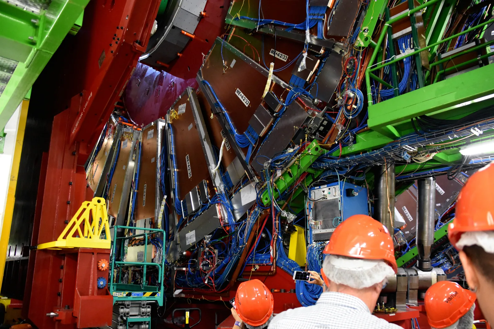
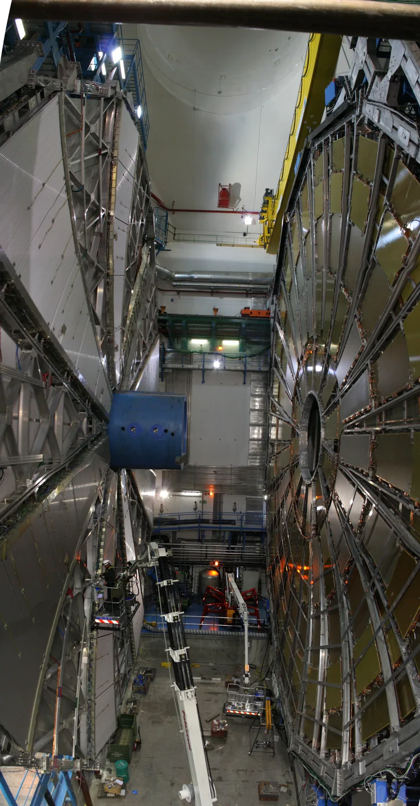

The Standard Model: elementary particles and interactions
Why does a free neutron decay in about a quarter of an hour on average, while the decay of the proton has never been observed, even though both are made of the same particles?
Prior knowledge
- In beta minus decay, a neutron in the nucleus turns into a proton, and an electron and an antineutrino are producedchapter The atomic nucleus and radioactive decay
- The equivalence of mass and energy $E = mc^2$, and mass can be given in the unit $\tfrac{\text{MeV}}{c^2}$chapter Mass defect and nuclear binding energy
Core path: follow the steps in order. Tasks marked Optional give extra practice. Optional tasks: 4.
Think about it
A free neutron taken out of the nucleus does not last: after about $15\,\text{min}$ on average it has turned into a proton, an electron and an antineutrino. The decay of the proton has been searched for for decades with huge water tanks that contain over $10^{33}$ protons, and not a single decay has been seen. Yet the proton and the neutron are almost equally heavy, and both are made of three quarks.
What makes the neutron unstable but the proton so permanent?
Optional Review: beta minus decay
Predict
Make your predictions before investigating 2 questions
Prediction 1: the charges of the quarks
Prediction 2: why does the proton not decay?
Investigate
The charges of hadrons and quarks
Measured data · The charges and quark contents: Particle Data Group, Review of Particle Physics 2024.
The table gives the quark content and the measured charge of six hadrons. A bar over a letter means an antiquark, whose charge is opposite to that of the quark.
| Particle | Quarks | Measured charge |
|---|---|---|
| proton $p$ | $u\,u\,d$ | $+1\,e$ |
| neutron $n$ | $u\,d\,d$ | $0$ |
| delta $\Delta^{++}$ | $u\,u\,u$ | $+2\,e$ |
| delta $\Delta^{-}$ | $d\,d\,d$ | $-1\,e$ |
| pion $\pi^+$ | $u\,\bar{d}$ | $+1\,e$ |
| pion $\pi^-$ | $d\,\bar{u}$ | $-1\,e$ |
Deduce from the table the charge of the $u$ quark as a multiple of the elementary charge $e$. Answer as a decimal number.
Hint 1: a guiding question
Find in the table a particle that contains only one kind of quark.
Hint 2: what is the connection
The particle $\Delta^{++}$ has three $u$ quarks and the charge $+2e$.
Hint 3: an intermediate step
Divide the charge among the three quarks: $2 : 3$.
Show the solution
Given
from the table $\Delta^{++} = u\,u\,u$, charge $q = +2\,e$
Asked
the charge $q_u$ of one $u$ quark as a multiple of the elementary charge
Principle
The charge of a hadron is the sum of the charges of its quarks, because charge is additive. The particle $\Delta^{++}$ has three identical $u$ quarks, so each has a third of the charge.
Formula
$q = 3\,q_u$, so $q_u = \dfrac{q}{3}$
Conversions
Not needed, because the charges are multiples of the elementary charge $e$.
Substitution
$q_u = \dfrac{+2\,e}{3} = +0.667\,e$
Answer
$+0.667\,e$
Or exactly $+\tfrac{2}{3}e$; the fraction is exact because the charges are whole numbers, and there are three decimals.
Reasonableness
From $\Delta^- = d\,d\,d$ we get in the same way $q_d = -\tfrac{1}{3}e$. For the proton this gives $\tfrac{2}{3} + \tfrac{2}{3} - \tfrac{1}{3} = 1$ and for the neutron $\tfrac{2}{3} - \tfrac{1}{3} - \tfrac{1}{3} = 0$, as in the table, and for the pion $\pi^+ = u\bar{d}$ we get $\tfrac{2}{3} + \tfrac{1}{3} = 1$.
Which reactions take place?
Measured data · Observations: Particle Data Group, Review of Particle Physics 2024; antineutrino reaction Cowan and Reines 1956; search for proton decay the Super-Kamiokande experiment.
The first table gives the charge $q$ of the particles in elementary charges, the baryon number $B$ and the lepton number $L$. The second table lists reactions, some of which have been observed and some never. Calculate the sums of $q$, $B$ and $L$ on both sides of each reaction.
| Particle | $q$ | $B$ | $L$ |
|---|---|---|---|
| $p$ | $+1$ | $1$ | $0$ |
| $n$ | $0$ | $1$ | $0$ |
| $e^-$ | $-1$ | $0$ | $1$ |
| $e^+$ | $+1$ | $0$ | $-1$ |
| $\bar{\nu}_e$ | $0$ | $0$ | $-1$ |
| $\pi^0$, $\gamma$ | $0$ | $0$ | $0$ |
| Reaction | Observed? |
|---|---|
| $n \to p + e^- + \bar{\nu}_e$ | yes |
| $n \to p + e^-$ | never |
| $e^- + e^+ \to \gamma + \gamma$ | yes |
| $\bar{\nu}_e + p \to n + e^+$ | yes |
| $p + p \to p + p + \pi^0$ | yes |
| $p + p \to p + p + n$ | never |
| $p \to e^+ + \pi^0$ | never, although it has been searched for |
Conclusion: what distinguishes the observed reactions?
Compare the observed and unobserved reactions in the table.
Which numbers are conserved in all the observed reactions? For each unobserved reaction, name a number that is not conserved.
Model answer
In all the observed reactions the sum of the charge, the baryon number and the lepton number is the same at the start and at the end. For example $\bar{\nu}_e + p \to n + e^+$: $q$ is $0 + 1 = 0 + 1$, $B$ is $0 + 1 = 1 + 0$ and $L$ is $-1 + 0 = 0 + (-1)$. In the unobserved reactions some number changes: in the reaction $n \to p + e^-$ the lepton number changes from $0$ to $1$, in the reaction $p + p \to p + p + n$ the baryon number changes from $2$ to $3$, and in the reaction $p \to e^+ + \pi^0$ the baryon number changes from $1$ to $0$ and the lepton number from $0$ to $-1$. The charge is conserved in all the reactions of the table, so the charge alone is not enough to tell them apart.
Assess your own answer
Tick the points your own answer already contains.
Review the theory summary and practise with the exercises.
Theory summary
Key idea
The smallest building blocks of matter
An atom consists of a nucleus and electrons, and the nucleus of protons and neutrons (chapter The atomic nucleus and radioactive decay). However, the proton and the neutron are not elementary particles: each is made of three quarks. No size has been measured for the electron or the quarks: experiments show that they are smaller than about $10^{-18}\,\text{m}$. They are called fundamental particles, or elementary particles. The Standard Model of particle physics is the theory that tells which fundamental particles exist and how they interact. It is one of the most precisely tested theories in physics.
Quarks and leptons
There are two kinds of fundamental particles of matter. There are six quarks: $u$ (up), $d$ (down), $c$ (charm), $s$ (strange), $t$ (top) and $b$ (bottom). The charge of a quark is a fraction of the elementary charge $e$: the charge of the $u$, $c$ and $t$ quarks is $+\tfrac{2}{3}e$, and that of the $d$, $s$ and $b$ quarks is $-\tfrac{1}{3}e$. There are also six leptons: the electron $e^-$, the muon $\mu^-$ and the tau $\tau^-$, whose charge is $-e$, and three electrically neutral neutrinos $\nu_e$, $\nu_\mu$ and $\nu_\tau$. Leptons are not made of quarks, and the strong interaction does not act on them.
The particles fall into three generations. All ordinary matter is made of the first-generation particles $u$, $d$ and $e^-$. The particles of the second and third generations are similar but heavier: for example, the mass of the muon is about $207$ times the mass of the electron. The heavy quarks and charged leptons decay quickly into lighter ones, so they are produced only in high-energy collisions, such as in accelerators and when cosmic rays hit the atmosphere. Neutrinos interact so weakly that tens of billions of the neutrinos produced in the fusion in the Sun pass through every square centimetre of our bodies each second.
Hadrons are made of quarks
Particles made of quarks are called hadrons. A hadron of three quarks is a baryon: the proton is $uud$ and the neutron $udd$. The charge of a hadron is the sum of the charges of its quarks. The charge of the proton is $+\tfrac{2}{3}e + \tfrac{2}{3}e - \tfrac{1}{3}e = +e$ and that of the neutron is $+\tfrac{2}{3}e - \tfrac{1}{3}e - \tfrac{1}{3}e = 0$. A hadron made of a quark and an antiquark is a meson, for example the pion $\pi^+ = u\bar{d}$. The fractional charges of the quarks always fit together so that the charge of a hadron is a whole-number multiple of the elementary charge.
A free quark has never been observed. The strong interaction keeps the quarks inside a hadron: when one tries to pull a quark out, the energy spent on the work creates new quark–antiquark pairs, and hadrons, not single quarks, come out of the collision.
Antiparticles and annihilation
Every particle has an antiparticle, which has the same mass but opposite charge and opposite baryon and lepton numbers. The antiparticle of the electron is the positron $e^+$, which is produced in beta plus decay. An antiparticle is written with a bar: $\bar{u}$ is the anti-$u$ quark and $\bar{\nu}_e$ the electron antineutrino. When a particle and its antiparticle meet, they can annihilate: both disappear, and all their energy turns into, for example, photons. When an electron and a positron are nearly at rest, two photons are produced and leave in opposite directions, each with the energy $m_e c^2 = 511\,\text{keV}$. PET imaging is based on this (chapter Radiation in medicine and technology).
The reverse phenomenon is pair production: close to an atomic nucleus a photon can turn into an electron and a positron if its energy is at least $2 m_e c^2 = 1.022\,\text{MeV}$. Mass and energy turn into each other according to the equation $E = mc^2$ (chapter Mass defect and nuclear binding energy).
The four fundamental interactions
All known forces can be traced back to four fundamental interactions. According to the Standard Model, an interaction is carried by mediator particles (force-carrier particles): particles emit and absorb mediator particles, and this changes their state of motion.
- strong: mediator the gluon $g$, acts on quarks
- electromagnetic: mediator the photon $\gamma$, acts on charged particles
- weak: mediators $W^+$, $W^-$ and $Z^0$, acts on quarks and leptons
- gravitational: mediator the graviton (hypothetical), acts on everything
The range of the electromagnetic interaction and of gravity is unlimited. The strong interaction reaches only about $10^{-15}\,\text{m}$ and the weak interaction about $10^{-18}\,\text{m}$ (orders of magnitude). The photon is the mediator particle of the electromagnetic interaction. When two electrons repel each other, they exchange photons. It is the same particle as the quantum of light (chapter The photoelectric effect and the photon), but the photons exchanged in an interaction are not observed as light. The strong interaction binds quarks into hadrons and also acts between nucleons in the nucleus. The weak interaction can change the type of a quark, and it causes beta decay. Gravity is the weakest of the fundamental interactions: the electric repulsive force between two protons is about $10^{36}$ times greater than the gravitational force between them. The mediator of gravity, the graviton, has not been observed, and gravity is not part of the Standard Model.

The Higgs boson and CERN
According to the Standard Model, space is filled with the Higgs field. Interaction with it gives mass to the $W$ and $Z$ bosons, the quarks and the charged leptons, but the photon and the gluon remain massless. The quantum of the field is the Higgs boson. It was discovered in 2012 at the LHC accelerator of CERN, the European Organization for Nuclear Research, and its mass is about $125\,\tfrac{\text{GeV}}{c^2}$. Only about $1\,\%$ of the mass of the proton is the mass of its quarks; the rest is the energy of the strong interaction that binds the quarks.
The LHC is an underground ring $27\,\text{km}$ long on the border of Switzerland and France. In it two proton beams are accelerated in opposite directions to the energy $6.8\,\text{TeV}$ and collided in the middle of the detectors. The energy of the collision produces new, heavy particles according to $E = mc^2$, and the detectors measure the tracks and energies of their decay products. Finland has been a member of CERN since 1991.

Conservation laws in particle reactions
Charge, baryon number and lepton number
Three quantities are conserved in all observed particle reactions and decays. They are added up on each side of the reaction. The charge is conserved:
$$q_\text{initial} = q_\text{final}$$
where $q$ is the sum of the charges of the particles as multiples of the elementary charge $e$. The baryon number of a particle is
$$B = \frac{n_\text{q} - n_{\bar{\text{q}}}}{3}$$
where $n_\text{q}$ is the number of quarks and $n_{\bar{\text{q}}}$ the number of antiquarks. So $B$ is $1$ for a baryon, $-1$ for an antibaryon and $0$ for a meson. The baryon number is conserved:
$$B_\text{initial} = B_\text{final}$$
The lepton number $L$ is $+1$ for a lepton, $-1$ for an antilepton and $0$ for other particles. The lepton number is conserved:
$$L_\text{initial} = L_\text{final}$$
More precisely, the lepton number of each generation is conserved separately, but for the tasks in this chapter the common $L$ is enough.
The table gives the numbers for the particles of this chapter: the proton $p$, neutron $n$, antiproton $\bar{p}$, electron $e^-$, muon $\mu^-$, positron $e^+$, neutrino $\nu$, antineutrino $\bar{\nu}$, the pions and the photon $\gamma$.
| Particle | $q$ | $B$ | $L$ |
|---|---|---|---|
| $p$ | $+1$ | $1$ | $0$ |
| $n$ | $0$ | $1$ | $0$ |
| $\bar{p}$ | $-1$ | $-1$ | $0$ |
| $e^-$, $\mu^-$ | $-1$ | $0$ | $1$ |
| $e^+$ | $+1$ | $0$ | $-1$ |
| $\nu$ | $0$ | $0$ | $1$ |
| $\bar{\nu}$ | $0$ | $0$ | $-1$ |
| $\pi^+$ | $+1$ | $0$ | $0$ |
| $\pi^0$ | $0$ | $0$ | $0$ |
| $\pi^-$ | $-1$ | $0$ | $0$ |
| $\gamma$ | $0$ | $0$ | $0$ |
Energy decides whether a particle can decay
A particle can decay on its own only into lighter particles. The energy released in the decay is
$$Q = (m_\text{initial} - m_\text{final})\,c^2$$
where $m_\text{initial}$ is the mass of the decaying particle and $m_\text{final}$ is the sum of the masses of the particles produced (chapter Mass defect and nuclear binding energy). The decay is possible only when $Q > 0$ and all three numbers are conserved. The masses of particles are given in the unit $\tfrac{\text{MeV}}{c^2}$, so $c^2$ cancels and $Q$ comes out directly in megaelectronvolts. The proton is the lightest baryon. Because the baryon number is conserved, the decay products of the proton would have to include a baryon, and there is no baryon lighter than the proton. This is why the proton has not been seen to decay: according to experiments, its lifetime is over $10^{34}$ years.
Beta decay at the quark level
In beta minus decay a neutron turns into a proton. At the quark level, one $d$ quark of the neutron turns into a $u$ quark through the mediator particle $W^-$ of the weak interaction:
$$\begin{aligned} &d \to u + W^- \\ &W^- \to e^- + \bar{\nu}_e \end{aligned}$$
where $W^-$ is the mediator particle of the weak interaction, $e^-$ the electron and $\bar{\nu}_e$ the electron antineutrino. The $W^-$ boson is very heavy, about $80\,\tfrac{\text{GeV}}{c^2}$, and it turns into an electron and an antineutrino before it can travel a measurable distance. The other two quarks do not take part, so $udd$ becomes $uud$. In beta plus decay, a $u$ quark of a proton in the nucleus turns into a $d$ quark through a $W^+$ boson, and a positron and a neutrino are produced.
Common misconception
Many people think that the mass of the proton is the sum of the masses of its three quarks, just as the mass of a house is the sum of the masses of its bricks. However, the masses of the quarks are only about $1\,\%$ of the mass of the proton. Most of the mass of the proton is the energy of the strong interaction that binds the quarks, $m = \tfrac{E}{c^2}$. This is also why quarks cannot be pulled out like bricks: the energy spent on pulling them out creates new hadrons.
Another mistake is to think that antimatter has negative mass or is somehow "opposite energy". The mass and energy of an antiparticle are positive and the same as those of the particle. What is opposite is the charge, the baryon number and the lepton number. This is why in annihilation all the numbers add up to zero and the mass turns entirely into the energy of radiation.
Summary
- The fundamental particles of the Standard Model are six quarks, six leptons, the mediator particles and the Higgs boson. Ordinary matter is made of the quarks $u$ and $d$ and of electrons.
- The charge of a quark is $+\tfrac{2}{3}e$ or $-\tfrac{1}{3}e$. A baryon is three quarks (proton $uud$, neutron $udd$), a meson a quark and an antiquark. Free quarks are not observed.
- The fundamental interactions and their mediators: strong (gluon), electromagnetic (photon), weak ($W^\pm$, $Z^0$) and gravitational (the hypothetical graviton).
- The Higgs field gives mass to the $W$ and $Z$ bosons, the quarks and the charged leptons. Its quantum, the Higgs boson, was discovered at CERN in 2012.
- An antiparticle has the same mass and the opposite charge. A particle and an antiparticle can annihilate into radiation.
- In a particle reaction the charge, the baryon number and the lepton number are conserved, and a decay requires $Q = (m_\text{initial} - m_\text{final})\,c^2 > 0$.
- In beta minus decay $d \to u + W^-$ and $W^- \to e^- + \bar{\nu}_e$.
Optional Return to your predictions
Compare your predictions with the tables and the theory. Then return to the question at the start: why can the neutron decay into a proton but the proton cannot decay into anything?
Would you change your prediction?
Apply
Worked example
Problem
A free neutron decays by the reaction $n \to p + e^- + \bar{\nu}_e$. Show that the charge, the baryon number and the lepton number are conserved, and calculate the energy released in the decay. The masses are $m_n = 939.565\,\tfrac{\text{MeV}}{c^2}$, $m_p = 938.272\,\tfrac{\text{MeV}}{c^2}$ and $m_e = 0.511\,\tfrac{\text{MeV}}{c^2}$ (Particle Data Group 2024). The mass of the antineutrino is less than $1\,\tfrac{\text{eV}}{c^2}$, so it is neglected.
Step 1/7
Given and asked. The reaction $n \to p + e^- + \bar{\nu}_e$ and the numbers $q$, $B$ and $L$ from the table. The masses are $m_n = 939.565\,\tfrac{\text{MeV}}{c^2}$, $m_p = 938.272\,\tfrac{\text{MeV}}{c^2}$ and $m_e = 0.511\,\tfrac{\text{MeV}}{c^2}$. We are asked whether $q$, $B$ and $L$ are conserved, and for the released energy $Q$ in megaelectronvolts.
Step 2/7
Principle. The decay is possible if the charge, the baryon number and the lepton number are conserved and the mass of the particles produced is smaller than that of the neutron. The energy corresponding to the mass difference is released as the kinetic energy of the particles produced.
Step 3/7
Formula solved. The conservation laws and the energy:
$$\begin{aligned} q_n &= q_p + q_e + q_{\bar{\nu}} \\ B_n &= B_p + B_e + B_{\bar{\nu}} \\ L_n &= L_p + L_e + L_{\bar{\nu}} \\ Q &= (m_n - m_p - m_e)\,c^2 \end{aligned}$$
Step 4/7
Unit conversions. None are needed: the masses are in the unit $\tfrac{\text{MeV}}{c^2}$, so $c^2$ cancels in the multiplication and the energy comes out directly in megaelectronvolts.
Step 5/7
Substitution. The numbers from the table and the masses:
$$\begin{aligned} &q_n = q_p + q_e + q_{\bar{\nu}} \\ &0 = (+1) + (-1) + 0 \\[6pt] &B_n = B_p + B_e + B_{\bar{\nu}} \\ &1 = 1 + 0 + 0 \\[6pt] &L_n = L_p + L_e + L_{\bar{\nu}} \\ &0 = 0 + 1 + (-1) \\[6pt] &Q = (m_n - m_p - m_e)\,c^2 \\ &= (939.565 - 938.272 \\ &\quad - 0.511)\,\tfrac{\text{MeV}}{c^2} \cdot c^2 \\ &= 0.782\,\text{MeV} \end{aligned}$$
Step 6/7
Result. The charge, the baryon number and the lepton number are conserved, so the decay is possible. It releases $0.782\,\text{MeV}$ of energy, three significant figures, because the masses are given to the precision of a thousandth of $\tfrac{\text{MeV}}{c^2}$.
Step 7/7
Reasonableness. The neutron is $1.293\,\tfrac{\text{MeV}}{c^2}$ heavier than the proton. The electron is also in the final state, so its mass $0.511\,\tfrac{\text{MeV}}{c^2}$ has already been subtracted from the difference, and a little under one megaelectronvolt remains. This is of the same order of magnitude as the energies of the beta decays of nuclei in the chapter The atomic nucleus and radioactive decay. Without the antineutrino the lepton number at the end would be $1$, so the antineutrino has to be produced.
Optional Find the error
Apply to a new situation
In collisions of cosmic rays in the upper atmosphere, muons are produced, and they arrive at the ground all the time. The muon decays by the reaction $\mu^- \to e^- + \bar{\nu}_e + \nu_\mu$.
How much energy is released in the decay? The masses are $m_\mu = 105.658\,\tfrac{\text{MeV}}{c^2}$ and $m_e = 0.511\,\tfrac{\text{MeV}}{c^2}$; the masses of the neutrinos are negligibly small. Answer in megaelectronvolts.
Hint 1: a guiding question
The energy released is the energy corresponding to the mass difference, $Q = (m_\text{initial} - m_\text{final})\,c^2$.
Hint 2: what is the connection
At the start there is only the muon, at the end an electron and two neutrinos, whose masses are left out.
Hint 3: an intermediate step
$Q = (105.658 - 0.511)\,\text{MeV}$.
Show the solution
Given
$\mu^- \to e^- + \bar{\nu}_e + \nu_\mu$, $m_\mu = 105.658\,\tfrac{\text{MeV}}{c^2}$, $m_e = 0.511\,\tfrac{\text{MeV}}{c^2}$, the masses of the neutrinos negligibly small
Asked
the energy $Q$ released in the decay, in megaelectronvolts
Principle
The mass of the decaying particle is greater than the sum of the masses of the particles produced, and the energy corresponding to the difference is released as the kinetic energy of the particles produced ($E = mc^2$). The decay is allowed: the charge $-1 = -1 + 0 + 0$ and the lepton number $1 = 1 + (-1) + 1$ are conserved.
Formula
$Q = (m_\text{initial} - m_\text{final})\,c^2$, so $Q = (m_\mu - m_e)\,c^2$
Conversions
Not needed: the masses are in the unit $\tfrac{\text{MeV}}{c^2}$, so $c^2$ cancels and $Q$ comes out in megaelectronvolts.
Substitution
Answer
$105.147\,\text{MeV}$
To the precision of a thousandth like the given masses.
Reasonableness
The electron is about $200$ times lighter than the muon, so almost the entire rest energy of the muon, about $106\,\text{MeV}$, is released. The energy is over a hundred times that of the decay of the neutron, $0.782\,\text{MeV}$, because the mass difference between the muon and the electron is much greater than that between the neutron and the proton.
Check your understanding
Exit ticket
Answer on your own first and only then open the answer.
- Write what happens at the quark level in the beta minus decay of a neutron, and name the mediator particle.
Answer
One $d$ quark of the neutron turns into a $u$ quark: $d \to u + W^-$, and the $W^-$ boson turns into an electron and an antineutrino, $W^- \to e^- + \bar{\nu}_e$. The neutron $udd$ becomes a proton $uud$. The mediator $W^-$ belongs to the weak interaction.
- Is the reaction $p + n \to p + p + e^-$ possible? Justify using the conservation laws.
Answer
It is not. The charge is conserved ($1 + 0 = 1 + 1 - 1$) and the baryon number is conserved ($1 + 1 = 1 + 1 + 0$), but the lepton number is not: at the start $L = 0$, at the end the electron has $L = 1$.
1. Concept
2. The charge of a meson
The $D^+$ meson is made of a $c$ quark and an anti-$d$ quark $\bar{d}$. Calculate its charge as a multiple of the elementary charge $e$.
Hint 1: a guiding question
The charge of the $c$ quark is the same as that of the $u$ quark.
Hint 2: what is the connection
The charge of an antiquark is opposite to that of the quark: the charge of $\bar{d}$ is $+\tfrac{1}{3}e$.
Hint 3: an intermediate step
Add together $+\tfrac{2}{3} + \tfrac{1}{3}$.
Show the solution
Given
$D^+ = c\,\bar{d}$; the charge of the $c$ quark is $+\tfrac{2}{3}e$ and that of the $d$ quark $-\tfrac{1}{3}e$
Asked
the charge $q$ of the meson as a multiple of the elementary charge
Principle
The charge of a hadron is the sum of the charges of its quarks and antiquarks. The charge of an antiquark is opposite to that of the quark, so the charge of $\bar{d}$ is $+\tfrac{1}{3}e$.
Formula
$q = q_c + q_{\bar{d}}$, so $q = q_c - q_d$
Conversions
Not needed, because the charges are multiples of the elementary charge $e$.
Substitution
Answer
$+1\,e$
The result is exact because the charges of the quarks are exact fractions.
Reasonableness
The charge is a whole-number multiple of the elementary charge, like that of every hadron, and it fits the notation $D^+$. The baryon number of the meson is $\tfrac{1 - 1}{3} = 0$.
Suggestion: one answer does not show everything you can do, but review the theory summary and do the core exercises.
Optional 3. Mediator particles
Explain in three or four sentences what it means that the photon is the mediator particle of the electromagnetic interaction. Why is the graviton called hypothetical?
Model answer
According to the Standard Model, charged particles interact by emitting and absorbing photons, and this exchange of photons changes their state of motion: for example, two electrons repel each other. The same photon is the quantum of light and of other electromagnetic radiation. The other fundamental interactions are carried in the same way by their own mediators: the strong interaction by gluons and the weak interaction by $W$ and $Z$ bosons. The graviton is called hypothetical because it has not been observed and gravity is not part of the Standard Model.
Assess your own answer
Tick the points your own answer already contains.
Review the theory summary and practise with the exercises.
Exercises
Level 1 · basic practice 5 exercises
One formula or one step of reasoning. Core exercises first, the rest is extra practice.
- Exercise 15-1Core
The baryon $\Delta^{++}$ is made of three $u$ quarks. Calculate its charge as a multiple of the elementary charge $e$. Quark charges: $u$ ($+\tfrac{2}{3}e$), $d$ and $s$ ($-\tfrac{1}{3}e$); the charge of an antiquark is opposite.
Answer
$+2\,e$
Show the solution
Given
$\Delta^{++} = u\,u\,u$, charge of the $u$ quark $q_u = +\tfrac{2}{3}e$
Asked
the charge $q$ of the particle as a multiple of the elementary charge $e$
Principle
The charge of a hadron is the sum of the charges of its quarks, because charge is an additive and conserved quantity. All three quarks are of the same kind.
Formula
$q = q_u + q_u + q_u$, so $q = 3\,q_u$
Conversions
Not needed, because the charges are given as multiples of the elementary charge $e$.
Substitution
$q$$= 3 \cdot \left(+\tfrac{2}{3}e\right)$$= +2\,e$Answer
$+2\,e$
The result is exact because the charges of the quarks are exact fractions.
Reasonableness
The charge is a whole-number multiple of the elementary charge, like that of every hadron, and it fits the notation $\Delta^{++}$, where the two plus signs mean the charge $+2e$. In the proton one $u$ has been replaced by a $d$, and the charge is one smaller.
- Exercise 15-2Core
The antiproton $\bar{p}$ is made of the antiquarks $\bar{u}\,\bar{u}\,\bar{d}$. Calculate its charge as a multiple of the elementary charge $e$. Quark charges: $u$ ($+\tfrac{2}{3}e$), $d$ and $s$ ($-\tfrac{1}{3}e$); the charge of an antiquark is opposite.
Answer
$-1\,e$
Show the solution
Given
$\bar{p} = \bar{u}\,\bar{u}\,\bar{d}$; the charge of the $u$ quark is $+\tfrac{2}{3}e$ and that of the $d$ quark $-\tfrac{1}{3}e$
Asked
the charge $q$ of the antiproton as a multiple of the elementary charge
Principle
The charge of an antiquark is opposite to that of the corresponding quark, so the charge of $\bar{u}$ is $-\tfrac{2}{3}e$ and that of $\bar{d}$ is $+\tfrac{1}{3}e$. The charge of a hadron is the sum of the charges of its parts.
Formula
$q = 2\,q_{\bar{u}} + q_{\bar{d}}$, so $q = -2\,q_u - q_d$
Conversions
Not needed, because the charges are multiples of the elementary charge.
Substitution
$q$$= -2 \cdot \tfrac{2}{3}e - \left(-\tfrac{1}{3}e\right)$$= -\tfrac{4}{3}e + \tfrac{1}{3}e$$= -1\,e$Answer
$-1\,e$
The result is exact because the charges of the quarks are exact fractions.
Reasonableness
The charge of the antiproton must be opposite to the $+e$ of the proton, because an antiparticle has the same mass but the opposite charge. The result agrees.
- Exercise 15-3
The antineutron is made of three antiquarks $\bar{u}\,\bar{d}\,\bar{d}$. What is its baryon number $B$?
Answer
$-1$
Show the solution
Given
antineutron $\bar{n} = \bar{u}\,\bar{d}\,\bar{d}$: quarks $n_\text{q} = 0$, antiquarks $n_{\bar{\text{q}}} = 3$
Asked
the baryon number $B$
Principle
The baryon number is calculated from the quarks: each quark gives $+\tfrac{1}{3}$ and each antiquark $-\tfrac{1}{3}$. The antineutron has only antiquarks.
Formula
$B$$= \dfrac{n_\text{q} - n_{\bar{\text{q}}}}{3}$Conversions
Not needed, because the numbers of quarks are counts.
Substitution
$B = \dfrac{0 - 3}{3} = -1$
Answer
$-1$
The result is exact because the antiquarks are counted as items.
Reasonableness
The baryon number of the neutron is $1$, and an antiparticle has the opposite baryon number. The charge of the antineutron is $-\tfrac{2}{3} + \tfrac{1}{3} + \tfrac{1}{3} = 0$, like that of the neutron, so the antineutron differs from the neutron precisely in its baryon number.
- Exercise 15-4
An electron and a positron at rest annihilate into two photons. The rest energy of the electron and of the positron is $m_e c^2 = 511.0\,\text{keV}$ each.
What is the energy of one photon in kiloelectronvolts?
Answer
$511.0\,\text{keV}$
Show the solution
Given
an electron and a positron at rest, the rest energy of each $m_e c^2 = 511.0\,\text{keV}$; two photons are produced
Asked
the energy $E_\gamma$ of one photon in kiloelectronvolts
Principle
In annihilation all the energy of the particles turns into the energy of the photons, so energy is conserved. The momentum of particles at rest is zero, so the two photons must leave in opposite directions with equal momentum and therefore equal energy.
Formula
$2\,m_e c^2 = 2\,E_\gamma$, so $E_\gamma = m_e c^2$
Conversions
Not needed, because the rest energy is given in kiloelectronvolts.
Substitution
$E_\gamma = 511.0\,\text{keV}$
Answer
$511.0\,\text{keV}$
Four significant figures like the given rest energy.
Reasonableness
The combined energy of the two photons, $1022\,\text{keV}$, is the sum of the rest energies of the electron and the positron. The photons are gamma radiation, whose energies are of the order of kiloelectronvolts or megaelectronvolts, like the gamma photons of a nucleus.
- Exercise 15-5
A helium-4 nucleus contains two protons ($uud$) and two neutrons ($udd$). How many $u$ quarks are there in the nucleus?
Answer
$6$
Show the solution
Given
a helium-4 nucleus has two protons ($uud$) and two neutrons ($udd$)
Asked
the number of $u$ quarks $N_u$
Principle
The quarks of a nucleus are the quarks of its nucleons. A proton has two $u$ quarks and a neutron has one.
Formula
$N_u = 2 \cdot n_p + 1 \cdot n_n$
Conversions
Not needed, because we are counting items.
Substitution
$N_u = 2 \cdot 2 + 1 \cdot 2 = 6$
Answer
$6$
The result is an exact whole number.
Reasonableness
The nucleus has $4 \cdot 3 = 12$ quarks, of which the number of $d$ quarks is $2 \cdot 1 + 2 \cdot 2 = 6$, and $6 + 6 = 12$. The charge is $6 \cdot \tfrac{2}{3}e - 6 \cdot \tfrac{1}{3}e = +2e$, as it must be for a nucleus of two protons.
Level 2 · applied practice 4 exercises
Two steps, working with measured data, a unit conversion or rearranging a formula. Core exercises first, the rest is extra practice.
- Exercise 15-6Core
How many $d$ quarks are there in the carbon-12 nucleus ${}^{12}_{6}\text{C}$?
Answer
$18$
Show the solution
Given
nucleus ${}^{12}_{6}\text{C}$: atomic number $Z = 6$, mass number $A = 12$; proton $uud$, neutron $udd$
Asked
the number of $d$ quarks $N_d$
Principle
First the numbers of protons and neutrons are calculated from the symbol of the nucleus, then their $d$ quarks: a proton has one $d$ quark and a neutron has two.
Formula
$N = A - Z$ and $N_d = 1 \cdot Z + 2 \cdot N$, so $N_d = Z + 2\,(A - Z)$
Conversions
Not needed, because we are counting items.
Substitution
$N_d$$= 6 + 2 \cdot (12 - 6)$$= 6 + 12$$= 18$Answer
$18$
The result is an exact whole number.
Reasonableness
The nucleus has $12 \cdot 3 = 36$ quarks, of which the number of $u$ quarks is $2 \cdot 6 + 6 = 18$, and $18 + 18 = 36$. The charge is $18 \cdot \tfrac{2}{3}e - 18 \cdot \tfrac{1}{3}e = +6e$, as for a nucleus of six protons.
- Exercise 15-7Core
The lambda baryon $\Lambda^0$ decays by the reaction $\Lambda^0 \to p + \pi^-$.
How much energy is released in the decay? The masses are $m_\Lambda = 1115.683\,\tfrac{\text{MeV}}{c^2}$, $m_p = 938.272\,\tfrac{\text{MeV}}{c^2}$ and $m_\pi = 139.570\,\tfrac{\text{MeV}}{c^2}$ (Particle Data Group 2024). Answer in megaelectronvolts.
Answer
$37.84\,\text{MeV}$
Show the solution
Given
$\Lambda^0 \to p + \pi^-$, $m_\Lambda = 1115.683\,\tfrac{\text{MeV}}{c^2}$, $m_p = 938.272\,\tfrac{\text{MeV}}{c^2}$, $m_\pi = 139.570\,\tfrac{\text{MeV}}{c^2}$
Asked
the energy $Q$ released in the decay, in megaelectronvolts
Principle
The decaying particle is heavier than the products together, and the energy corresponding to the mass difference is released as the kinetic energy of the products ($E = mc^2$). The decay is allowed: the charge $0 = 1 - 1$, the baryon number $1 = 1 + 0$ and the lepton number $0 = 0 + 0$ are conserved.
Formula
$Q = (m_\text{initial} - m_\text{final})\,c^2$, so $Q = (m_\Lambda - m_p - m_\pi)\,c^2$
Conversions
Not needed: the masses are in the unit $\tfrac{\text{MeV}}{c^2}$, so $c^2$ cancels.
Substitution
$Q$$= (1115.683 - 938.272 - 139.570)\,\tfrac{\text{MeV}}{c^2} \cdot c^2$$= 37.841\,\text{MeV}$Answer
$37.84\,\text{MeV}$
; the masses are given to the precision of a thousandth, so $37.841\,\text{MeV}$ is accepted too.
Reasonableness
Rounded, $1116 - 938 - 140 = 38$, close to the result. The energy is positive, so the decay is possible as far as energy is concerned, and it is only about $3\,\%$ of the rest energy of the lambda, because the products are almost as heavy.
- Exercise 15-8
A gamma photon can turn into an electron and a positron close to an atomic nucleus if its energy is at least the sum of the rest energies of the electron and the positron, $2 \cdot 0.511\,\text{MeV}$.
What is the greatest possible wavelength of such a photon? Answer in picometres.
Constants: $h = 6.626 \cdot 10^{-34}\,\text{J}\,\text{s}$, $c = 2.998 \cdot 10^{8}\,\text{m/s}$, $1\,\text{MeV} = 10^{6}\,\text{eV}$, $1\,\text{eV} = 1.602 \cdot 10^{-19}\,\text{J}$ and $1\,\text{pm} = 10^{-12}\,\text{m}$.
Answer
$1.21\,\text{pm}$
Show the solution
Given
the smallest energy of the photon $E = 2 \cdot 0.511\,\text{MeV}$, $h = 6.626 \cdot 10^{-34}\,\text{J}\,\text{s}$, $c = 2.998 \cdot 10^{8}\,\text{m/s}$
Asked
the greatest wavelength $\lambda$ in picometres
Principle
In pair production the masses of the electron and the positron are made from the energy of the photon, so the energy of the photon must be at least the sum of their rest energies. The energy of a photon is $\tfrac{hc}{\lambda}$, so the smallest energy corresponds to the greatest wavelength.
Formula
$E = \dfrac{hc}{\lambda}$, so $\lambda = \dfrac{hc}{E}$
Conversions
$E$$= 2 \cdot 0.511 \cdot 10^{6} \cdot 1.602 \cdot 10^{-19}\,\text{J}$$= 1.6372 \cdot 10^{-13}\,\text{J}$finally $1\,\text{m} = 10^{12}\,\text{pm}$.
Substitution
$\lambda$$= 6.626 \cdot 10^{-34}\,\text{J}\,\text{s} \cdot \dfrac{2.998 \cdot 10^{8}\,\text{m/s}}{1.6372 \cdot 10^{-13}\,\text{J}}$$= 1.2133 \cdot 10^{-12}\,\text{m}$$= 1.2133\,\text{pm}$Answer
$1.21\,\text{pm}$
Three significant figures like the rest energy $0.511\,\text{MeV}$.
Reasonableness
The wavelength of a gamma photon is of the order of picometres, like that of the gamma radiation in the chapter The atomic nucleus and radioactive decay. A photon with a longer wavelength is not enough to make a pair, because its energy is smaller than $1.022\,\text{MeV}$.
- Exercise 15-9
The neutron is made of the quarks $u\,d\,d$. The masses of the quarks are $m_u = 2.16\,\tfrac{\text{MeV}}{c^2}$ and $m_d = 4.70\,\tfrac{\text{MeV}}{c^2}$, and the mass of the neutron is $939.565\,\tfrac{\text{MeV}}{c^2}$ (Particle Data Group 2024).
What percentage of the mass of the neutron is the sum of the masses of its quarks?
Answer
$1.23\,\%$
Show the solution
Given
neutron $udd$, $m_u = 2.16\,\tfrac{\text{MeV}}{c^2}$, $m_d = 4.70\,\tfrac{\text{MeV}}{c^2}$, $m_n = 939.565\,\tfrac{\text{MeV}}{c^2}$
Asked
the share $x$ of the mass of the neutron that is the sum of the masses of the quarks, as a percentage
Principle
First the sum of the masses of the three quarks is calculated, then it is compared with the mass of the neutron by one division. The masses are in the same unit, so the share has no unit.
Formula
$m_\text{quarks} = m_u + 2\,m_d$, so
$x$$= \dfrac{m_u + 2\,m_d}{m_n} \cdot 100\,\%$Conversions
Not needed, because all the masses are in the unit $\tfrac{\text{MeV}}{c^2}$ and the unit cancels.
Substitution
$x$$= \dfrac{2.16\,\tfrac{\text{MeV}}{c^2} + 2 \cdot 4.70\,\tfrac{\text{MeV}}{c^2}}{939.565\,\tfrac{\text{MeV}}{c^2}} \cdot 100\,\%$$= \dfrac{11.56}{939.565} \cdot 100\,\%$$= 1.2304\,\%$Answer
$1.23\,\%$
Three significant figures like the masses of the quarks.
Reasonableness
The masses of the quarks are a few $\tfrac{\text{MeV}}{c^2}$ and that of the neutron almost $1000\,\tfrac{\text{MeV}}{c^2}$, so the share is of the order of one percent. The remaining about $99\,\%$ of the mass of the neutron is the energy of the strong interaction that binds the quarks.
Level 3 · challenging 3 exercises
Optional: application, two ideas together or a new situation where you reason for yourself.
- Exercise 15-10
The omega baryon $\Omega^-$ is made of three $s$ quarks, and its mass is $1672.45\,\tfrac{\text{MeV}}{c^2}$. Three reactions are proposed for its decay: (1) $\Omega^- \to K^- + \pi^0$, (2) $\Omega^- \to \Sigma^0 + K^-$ and (3) $\Omega^- \to \Lambda^0 + K^-$. The particles: $\Lambda^0 = u\,d\,s$ ($1115.683\,\tfrac{\text{MeV}}{c^2}$), $\Sigma^0 = u\,d\,s$ ($1192.642\,\tfrac{\text{MeV}}{c^2}$), the meson $K^- = s\,\bar{u}$ ($493.677\,\tfrac{\text{MeV}}{c^2}$) and the uncharged meson $\pi^0$ ($134.977\,\tfrac{\text{MeV}}{c^2}$) (Particle Data Group 2024). Using the charge, the baryon number and the energy, deduce which of the reactions is possible, and calculate the energy released in it in megaelectronvolts. Quark charges: $u$ ($+\tfrac{2}{3}e$), $d$ and $s$ ($-\tfrac{1}{3}e$).
Answer
$63.09\,\text{MeV}$
Show the solution
Given
$\Omega^- = s\,s\,s$, $m_\Omega = 1672.45\,\tfrac{\text{MeV}}{c^2}$; $\Lambda^0 = u\,d\,s$, $m_\Lambda = 1115.683\,\tfrac{\text{MeV}}{c^2}$; $\Sigma^0 = u\,d\,s$, $m_\Sigma = 1192.642\,\tfrac{\text{MeV}}{c^2}$; $K^- = s\,\bar{u}$, $m_K = 493.677\,\tfrac{\text{MeV}}{c^2}$; $\pi^0$ an uncharged meson, $m_\pi = 134.977\,\tfrac{\text{MeV}}{c^2}$
Asked
the possible reaction and the energy $Q$ released in it, in megaelectronvolts
Principle
A reaction is possible only if the charge, the baryon number and the lepton number are conserved and the energy released is positive, because a particle at rest cannot produce products heavier than itself. The charges and baryon numbers are calculated from the quarks. There are no leptons, so $L = 0$ everywhere. Charges: $\Omega^-$: $3 \cdot \left(-\tfrac{1}{3}\right)e = -e$; $\Lambda^0$ and $\Sigma^0$: $\left(\tfrac{2}{3} - \tfrac{1}{3} - \tfrac{1}{3}\right)e = 0$; $K^-$: $\left(-\tfrac{1}{3} - \tfrac{2}{3}\right)e = -e$. The baryon number is $\tfrac{3 - 0}{3} = 1$ for baryons and $\tfrac{1 - 1}{3} = 0$ for mesons.
Formula
$q_\text{initial} = q_\text{final}$,
$B_\text{initial}$$= B_\text{final}$$Q$$= (m_\text{initial} - m_\text{final})\,c^2$$> 0$for reaction (3) $Q = (m_\Omega - m_\Lambda - m_K)\,c^2$
Conversions
Not needed: the masses are in the unit $\tfrac{\text{MeV}}{c^2}$, so $c^2$ cancels.
Substitution
(1) the charge $-1 = -1 + 0$ is conserved, but the baryon number $1 \ne 0 + 0$, so the reaction is forbidden. (2) the charge $-1 = 0 - 1$ and the baryon number $1 = 1 + 0$ are conserved, but
$Q$$= (1672.45 - 1192.642 - 493.677)\,\text{MeV}$$= -13.869\,\text{MeV}$$< 0$so the energy is not enough. (3) the charge $-1 = 0 - 1$ and the baryon number $1 = 1 + 0$ are conserved, and
$Q$$= (1672.45 - 1115.683 - 493.677)\,\tfrac{\text{MeV}}{c^2} \cdot c^2$$= 63.090\,\text{MeV}$Answer
Reaction (3) $\Omega^- \to \Lambda^0 + K^-$ is possible, and it releases $63.09\,\text{MeV}$, to the precision of a hundredth like the mass of the omega.
Reasonableness
Rounded, $1672 - 1116 - 494 = 62$, close to the result. Reactions (2) and (3) differ only in the mass of the baryon: the lighter $\Lambda^0$ leaves energy over, the heavier $\Sigma^0$ does not. The charge alone does not tell the kind of quarks: $\Delta^- = d\,d\,d$ also has the charge $-e$, but its mass is only about $1232\,\tfrac{\text{MeV}}{c^2}$, because the $d$ quark is lighter than the $s$ quark. The observed $\Omega^-$ most often decays precisely by reaction (3).
- Exercise 15-11
In science fiction, spaceships run on antimatter.
How much energy would be released when $1.0\,\text{g}$ of antimatter annihilates with $1.0\,\text{g}$ of ordinary matter and all the mass turns into the energy of radiation ($c = 2.998 \cdot 10^{8}\,\text{m/s}$)?
Answer
$1.8 \cdot 10^{14}\,\text{J}$
Show the solution
Given
the mass of antimatter $1.0\,\text{g}$ and the mass of ordinary matter $1.0\,\text{g}$, $c = 2.998 \cdot 10^{8}\,\text{m/s}$
Asked
the energy released $E$ in the unit $10^{14}\,\text{J}$
Principle
In annihilation the mass of both the antimatter and the ordinary matter turns into the energy of radiation, so the whole mass $2.0\,\text{g}$ takes part. The equivalence of mass and energy gives the energy.
Formula
$E = mc^2$, where $m = m_\text{anti} + m_\text{matter}$, so $E = (m_\text{anti} + m_\text{matter})\,c^2$
Conversions
$1.0\,\text{g} + 1.0\,\text{g}$$= 2.0\,\text{g}$$= 2.0 \cdot 10^{-3}\,\text{kg}$and $1\,\text{kg} \cdot \tfrac{\text{m}^2}{\text{s}^2} = 1\,\text{J}$.
Substitution
$E$$= 2.0 \cdot 10^{-3}\,\text{kg} \cdot (2.998 \cdot 10^{8}\,\text{m/s})^2$$= 2.0 \cdot 10^{-3}\,\text{kg} \cdot 8.988 \cdot 10^{16}\,\tfrac{\text{m}^2}{\text{s}^2}$$= 1.798 \cdot 10^{14}\,\text{J}$Answer
$1.8 \cdot 10^{14}\,\text{J}$
Two significant figures like the masses $1.0\,\text{g}$.
Reasonableness
By estimate $2 \cdot 10^{-3} \cdot (3 \cdot 10^{8})^2 = 1.8 \cdot 10^{14}$. A common mistake would be to use only the mass of the antimatter, which would give half of the result. The energy corresponds to about $50\,\text{GWh}$, since $1\,\text{GWh} = 3.6 \cdot 10^{12}\,\text{J}$.
- Exercise 15-12
Antineutrinos were first observed in 1956 next to a nuclear reactor by the reaction $\bar{\nu}_e + p \to n + X$. Deduce from the conservation of charge, baryon number and lepton number which particle $X$ is.
What is the lepton number $L$ of the particle $X$?
Answer
$L_X = -1$
Show the solution
Given
the reaction $\bar{\nu}_e + p \to n + X$; from the table $\bar{\nu}_e$: $q = 0$, $B = 0$, $L = -1$; $p$: $q = +1$, $B = 1$, $L = 0$; $n$: $q = 0$, $B = 1$, $L = 0$
Asked
the lepton number $L_X$ of the particle $X$
Principle
The charge, the baryon number and the lepton number are conserved in all particle reactions, so the numbers of the particle $X$ follow from the difference between the initial and final states. They also tell which particle $X$ is.
Formula
$L_{\bar{\nu}} + L_p = L_n + L_X$, so $L_X = L_{\bar{\nu}} + L_p - L_n$
Conversions
Not needed, because the numbers have no units.
Substitution
$L_X = -1 + 0 - 0 = -1$; in the same way $q_X = 0 + 1 - 0 = +1$ and $B_X = 0 + 1 - 1 = 0$
Answer
$L_X = -1$
The result is an exact whole number. The particle with $q = +1$, $B = 0$ and $L = -1$ is an antilepton, that is the positron $e^+$: $\bar{\nu}_e + p \to n + e^+$.
Reasonableness
The reaction is like beta plus decay: a proton turns into a neutron and a positron is produced. The experiment of Cowan and Reines observed precisely the $511\,\text{keV}$ photons produced in the annihilation of the positron and the capture of the neutron.
Photographs
- CERN LHC CMS 01. SimonWaldherr. source, CC BY-SA 4.0
- Atlas detector CERN feb2007. Sindre Skrede. source, public domain